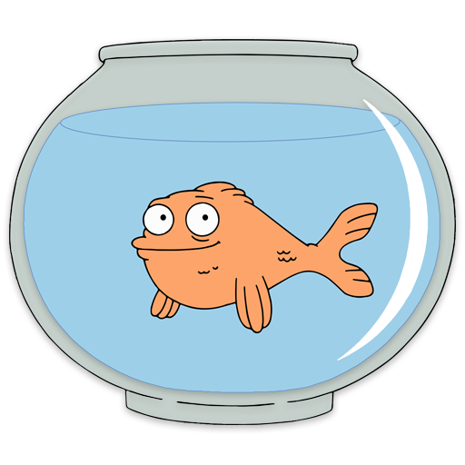
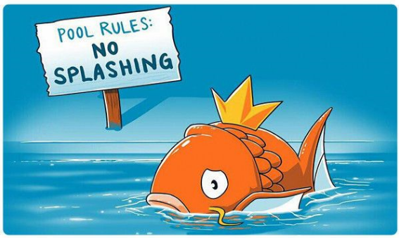

Klaus est un poisson aux opinions tranchées dans American Dad.
Saviez-vous que les fameuses 9 secondes de mémoire des poissons rouges n'ont
jamais été prouvées ? D'ailleurs, selon certaines études, les poissons rouges peuvent
mémoriser facilement les heures de distribution de nourriture. Un peu de respect pour
cette brave bête !

Magikarp est un Pokémon de type Eau qui aime éclabousser.